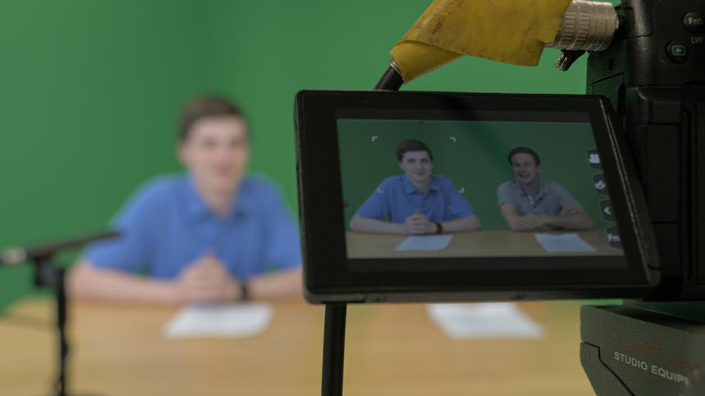
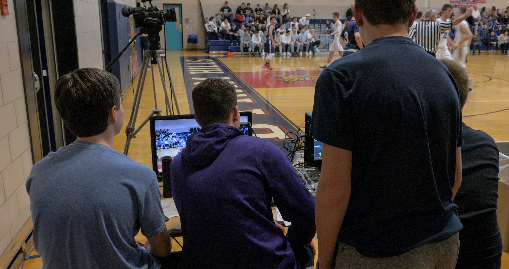

Marketing and Media Club
Welcome to the Bobcat Marketing & Media Club! Our mission is to learn about marketing and media modules and to provide services to other clubs, school organizations, and even to the greater North Castle community. Over the past few years, we’ve made a strong commitment to market athletic content to the community via social media, live streams, and the Byram Blitz - a sports talk show covering the highlights of Byram athletics. Another main goal of our club is to teach students about marketing techniques, including the ins and outs of social media and video production. Much of our work is collaborative, so you will have the opportunity to take part in all of the various projects we have throughout the year. If you’re interested in joining, please join our Google Classroom using the code 5qhnqvp. If you have any questions, please don’t hesitate to reach out to co-presidents Markian Nychka (nychkam22@byramhills.net) and Matt Marinozzi (marinozzim22@byramhills.net). Our Club Advisors are Mr. Melso, Head of Operations for the District Media/Communications Center and Ms. Medrano, District Communications/Media Specialist.
 